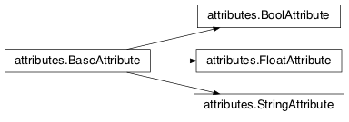
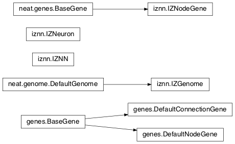
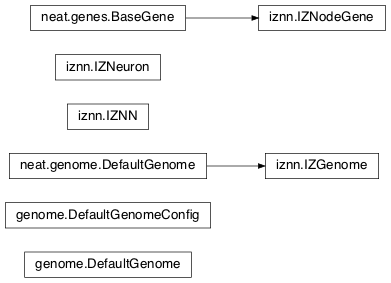
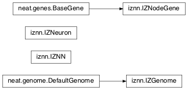
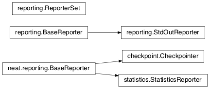

Module summaries¶
activations¶
Has the built-in activation functions, code for using them, and code for adding new user-defined ones.
- exception
activations.InvalidActivationFunction(TypeError)[source]¶Exception called if an activation function being added is invalid according to the
validate_activationfunction.Changed in version 0.91-github: Base of exception changed to more-precise TypeError.
activations.validate_activation(function)[source]¶Checks to make sure its parameter is a function that takes a single argument.
Parameters: function (object) – Object to be checked. Raises: InvalidActivationFunction – If the object does not pass the tests.
- class
activations.ActivationFunctionSet[source]¶Contains the list of current valid activation functions, including methods for adding and getting them.
add(name, function)[source]¶After validating the function (via
validate_activation), adds it to the available activation functions under the given name. Used byDefaultGenomeConfig.add_activation.
Parameters:
- name (str) – The name by which the function is to be known in the configuration file.
- function (
function) – The function to be added.
get(name)[source]¶Returns the named function, or raises an exception if it is not a known activation function.
Parameters: name (str) – The name of the function. Raises: InvalidActivationFunction – If the function is not known.
Note
TODO: Suggested simplification for the below: Make __config_items__ a dict of lists, with name -> [value_type, default] -
no default if the last is None. This would also allow moving get_config_params into the BaseAttribute class, although config_item_names may require
some modifications. (A default capability will be needed for future expansions of the attributes, such as different types of initializations, and for
enabling better handling of the current activation/aggregation function defaults.)
The above is mostly/entirely done in the config_work branch.
attributes¶
Deals with attributes used by genes.

- class
attributes.BaseAttribute(name)[source]¶Superclass for the type-specialized attribute subclasses, used by genes (such as via the
genes.BaseGeneimplementation). Callsconfig_item_namesto set up a listing of the names of configuration items usingsetattr.
- class
attributes.FloatAttribute(BaseAttribute)[source]¶Class for numeric attributes such as the response of a node; includes code for configuration, creation, and mutation.
get_config_params()¶Uses
config_item_namesto get its list of configuration item names, then gets afloat-typeconfig.ConfigParameterinstance for each and returns it.
Returns: A list of ConfigParameterinstances.Return type: list(object)
clamp(value, config)[source]¶Gets the minimum and maximum values desired from
config, then ensures that the value is between them.
Parameters: Returns: The value, if it is within the desired range, or the appropriate end of the range, if it is not.
Return type:
init_value(config)[source]¶Initializes the attribute’s value, (currently always) using a gaussian distribution with the configured mean and standard deviation followed by
clampto keep the result within the desired range.
Parameters: config (object) – The configuration object from which the mean and standard deviation values are to be retrieved. Returns: The new value. Return type: float
mutate_value(value, config)[source]¶May replace (as if reinitializing, using
init_value), mutate (using a 0-mean gaussian distribution with a configured standard deviation frommutate_power), or leave alone the input value, depending on the configuration settings (ofreplace_rateandmutate_rate). TODO: Note that thereplace_rateis likely to be lower, so should be checked second. (Done in the config_work branch.)
Parameters: Returns: Either the original value, if unchanged, or the new value.
Return type:
- class
attributes.BoolAttribute(BaseAttribute)[source]¶Class for boolean attributes such as whether a connection is enabled or not; includes code for configuration, creation, and mutation.
get_config_params()¶Uses
config_item_namesto get its list of configuration item names, then gets abool-type orfloat-typeconfig.ConfigParameterinstance for each and returns it.
Returns: A list of ConfigParameterinstances.Return type: list(object)
init_value(config)[source]¶Initializes the attribute’s value, either using a configured default or (if the default is
None) with a 50/50 chance ofTrueorFalse.
Parameters: config (object) – The configuration object from which the default parameter is to be retrieved. Returns: The new value. Return type: bool
mutate_value(value, config)[source]¶With a frequency determined by the
mutate_rate(which is more precisely areplace_rate) configuration parameter, replaces the value with a 50/50 chance ofTrueorFalse; note that this has a 50% chance of leaving the value unchanged. TODO: Have different chances possible of mutation in each direction. Also, do not check vsrandomif themutate_rateis 0 (done in the config_work branch).
Parameters: Returns: Either the original value, if unchanged, or the new value.
Return type:
- class
attributes.StringAttribute(BaseAttribute)[source]¶Class for string attributes such as the aggregation function of a node, which are selected from a list of options; includes code for configuration, creation, and mutation.
get_config_params()¶Uses
config_item_namesto get its list of configuration item names, then gets astr-type,list-type orfloat-typeconfig.ConfigParameterinstance for each and returns it.
Returns: A list of ConfigParameterinstances.Return type: list(object)
init_value(config)[source]¶Initializes the attribute’s value, either using a configured default or (if the default is either
Noneorrandom) with a randomly-chosen member of theoptions(each having an equal chance). Note: It is possible for the default value, if specifically configured, to not be one of the options.
Parameters: config (object) – The configuration object from which the default and, if necessary, optionsparameters are to be retrieved.Returns: The new value. Return type: str
mutate_value(value, config)[source]¶With a frequency determined by the
mutate_rate(which is more precisely areplace_rate) configuration parameter, replaces the value with an one of theoptions, with each having an equal chance; note that this can be the same value as before. (It is possible to crudely alter the chances of what is chosen by listing a given option more than once, although this is inefficient given the use of therandom.choicefunction.) TODO: Do not check vsrandomif themutate_rateis 0 (done in the config_work branch). (Longer-term, add configurable probabilities of which option is used; eventually, as with the improved version of RBF-NEAT, separate genes for the likelihoods of each (but always doing some change, to prevent overly-conservative evolution due to its inherent short-sightedness), allowing the genomes to control the distribution of options, will be desirable.)
checkpoint¶
Uses pickle to save and restore populations (and other aspects of the simulation state).
- class
checkpoint.Checkpointer(generation_interval=100, time_interval_seconds=300)[source]¶A reporter class that performs checkpointing, saving and restoring the simulation state (including population, randomization, and other aspects). It saves the current state every
generation_intervalgenerations ortime_interval_secondsseconds, whichever happens first. Subclassesreporting.BaseReporter. (The potential save point is at the end of a generation.)
Parameters:
- static
save_checkpoint(config, population, species, generation)[source]¶Saves the current simulation (including randomization) state to
neat-checkpoint-generation, withgenerationbeing the generation number.
- static
restore_checkpoint(filename)[source]¶Resumes the simulation from a previous saved point. Loads the specified file, sets the randomization state, and returns a
population.Populationobject set up with the rest of the previous state.
Parameters: filename (str) – The file to be restored from. Returns: Object that can be used with Population.runto restart the simulation.Return type: Populationobject.
config¶
Does general configuration parsing; used by other classes for their configuration.
- class
config.ConfigParameter(name, value_type)[source]¶Does initial handling of a particular configuration parameter.
Parameters:
__repr__()[source]¶Returns a representation of the class suitable for use in code for initialization.
Returns: Representation as for repr.Return type: str
parse(section, config_parser)[source]¶Uses the supplied configuration parser (either from the
configparser.ConfigParserclass, or - for 2.7 - the ConfigParser.SafeConfigParser class) to gather the configuration parameter from the appropriate configuration file section. Parsing varies depending on the type.
Parameters: Returns: The configuration parameter value, in stringified form unless a list.
Return type:
interpret(config_dict)[source]¶Takes a
dictionaryof configuration parameters, as output by the configuration parser called inparse(), and interprets them into the proper type, with some error-checking.
Parameters: config_dict (dict) – Configuration parameters as output by the configuration parser. Returns: The configuration parameter value Return type: str or int or bool or float or list
config.write_pretty_params(f, config, params)[source]¶Prints configuration parameters, with justification based on the longest configuration parameter name.
Parameters:
- f (
file) – File object to be written to.- config (object) – Configuration object from which parameter values are to be fetched (using
getattr).- params (list) – List of
ConfigParameterinstances giving the names of interest and the types of parameters.
- class
config.Config(genome_type, reproduction_type, species_set_type, stagnation_type, filename)[source]¶A simple container for user-configurable parameters of NEAT. The four parameters ending in
_typemay be the built-in ones or user-provided objects, which must make available the methodsparse_configandwrite_config, plus others depending on which object it is. (For more information on the objects, see below and Customizing Behavior.)Configitself takes care of theNEATparameters. For a description of the configuration file, see Configuration file description.
Parameters:
- genome_type (object) – Specifies the genome class used, such as
genome.DefaultGenomeoriznn.IZGenome. See Genome Interface for the needed interface.- reproduction_type (object) – Specifies the reproduction class used, such as
reproduction.DefaultReproduction. See Reproduction Interface for the needed interface.- species_set_type (object) – Specifies the species set class used, such as
species.DefaultSpeciesSet.- stagnation_type (object) – Specifies the stagnation class used, such as
stagnation.DefaultStagnation.- filename (str) –
Pathname for configuration file to be opened, read, processed by a parser from the
configparser.ConfigParserclass (or, for 2.7, the ConfigParser.SafeConfigParser class), theNEATsection handled byConfig, and then other sections passed to theparse_configmethods of the appropriate classes.Raises: AssertionError – If any of the objects lack a
parse_configmethod.
save(filename)[source]¶Opens the specified file for writing (not appending) and outputs a configuration file from the current configuration. Uses
write_pretty_params()for theNEATparameters and the appropriate classwrite_configmethods for the other sections.
Parameters: filename (str) – The configuration file to be written.
ctrnn¶
- class
ctrnn.CTRNNNodeEval(time_constant, activation, aggregation, bias, response, links)[source]¶Sets up the basic Continuous-time recurrent neural network implementation (continuous-time recurrent neural network) nodes.
Parameters:
- time_constant (float) – Controls how fast the node responds; \(\tau_i\) from Continuous-time recurrent neural network implementation.
- activation (
function) – Activation function for the node.- aggregation (
function) – Aggregation function for the node.- bias (float) – Bias for the node.
- response (float) – Response multiplier for the node.
- links (list(tuple(int,float))) – List of other nodes providing input, as tuples of (input key, weight)
- class
ctrnn.CTRNN(inputs, outputs, node_evals)[source]¶Sets up the Continuous-time recurrent neural network implementation network itself.
reset()[source]¶Resets the time and all node activations to 0 (necessary due to otherwise retaining state via recurrent connections).
advance(inputs, advance_time, time_step=None)[source]¶Advance the simulation by the given amount of time, assuming that inputs are constant at the given values during the simulated time.
Parameters:
- inputs (list) – The values for the input nodes.
- advance_time (float) – How much time to advance the network before returning the resulting outputs.
- time_step (float) – How much time per step to advance the network; the default of
Nonewill currently result in an error, but it is planned to determine it automatically.Returns: The values for the output nodes.
Return type: Raises: NotImplementedError – If a
time_stepis not given.
- static
create(genome, config, time_constant)[source]¶Receives a genome and returns its phenotype (a
CTRNNwithCTRNNNodeEvalnodes).
Parameters:
- genome (object) – A
genome.DefaultGenomeinstance.- config (object) – A
config.Configinstance.- time_constant (float) – Used for the
CTRNNNodeEvalinitializations.
genes¶

- class
genes.BaseGene(key)[source]¶Handles functions shared by multiple types of genes (both node and connection), including crossover and calling mutation methods.
Parameters: key (int) – The gene identifier. Note: For connection genes, determining whether they are homologous (for genomic distance and crossover determination) uses the identifiers of the connected nodes, not the connection gene’s identifier.
__str__()[source]¶Converts gene attributes into a printable format.
Returns: Stringified gene instance. Return type: str
__lt__(other)[source]¶Allows sorting genes by keys.
Parameters: other (object) – The other BaseGeneobject.Returns: Whether the calling instance’s key is less than that of the otherinstance.Return type: bool
- classmethod
parse_config(config, param_dict)[source]¶Placeholder; parameters are entirely in gene attributes.
- classmethod
get_config_params()[source]¶Fetches configuration parameters from each gene class’
__gene_attributes__list (usingFloatAttribute.get_config_params,BoolAttribute.get_config_params, orStringAttribute.get_config_paramsas appropriate for each listed attribute). Used bygenome.DefaultGenomeConfigto include gene parameters in its configuration parameters.
Returns: List of configuration parameters (as config.ConfigParameterinstances) for the gene attributes.Return type: list(object)
init_attributes(config)[source]¶Initializes its gene attributes using the supplied configuration object and
FloatAttribute.init_value,BoolAttribute.init_value, orStringAttribute.init_valueas appropriate.
Parameters: config (object) – Configuration object to be used by the appropriate attributesclass.
mutate(config)[source]¶Mutates (possibly) its gene attributes using the supplied configuration object and
FloatAttribute.init_value,BoolAttribute.init_value, orStringAttribute.init_valueas appropriate.
Parameters: config (object) – Configuration object to be used by the appropriate attributesclass.
copy()[source]¶Makes a copy of itself, including its subclass, key, and all gene attributes.
Returns: A copied gene Return type: object
crossover(gene2)[source]¶Creates a new gene via crossover - randomly inheriting attributes from its parents. The two genes must be homologous, having the same key/id.
Parameters: gene2 (object) – The other gene. Returns: A new gene, with the same key/id, with other attributes being copied randomly (50/50 chance) from each parent gene. Return type: object
- class
genes.DefaultNodeGene(BaseGene)[source]¶Groups
attributesspecific to node genes - such as bias - and calculates genetic distances between two homologous (not disjoint or excess) node genes.
distance(other, config)[source]¶Determines the degree of differences between node genes using their 4 attributes; the final result is multiplied by the configured compatibility_weight_coefficient.
Parameters: Returns: The contribution of this pair to the genomic distance between the source genomes.
Return type:
- class
genes.DefaultConnectionGene(BaseGene)[source]¶Groups
attributesspecific to connection genes - such as weight - and calculates genetic distances between two homologous (not disjoint or excess) connection genes.
distance(other, config)[source]¶Determines the degree of differences between connection genes using their 2 attributes; the final result is multiplied by the configured compatibility_weight_coefficient.
Parameters: Returns: The contribution of this pair to the genomic distance between the source genomes.
Return type:
genome¶

genome.product(x)¶Used to implement a product (\(prod x\)) aggregation function.
Parameters: x (list(float)) – The inputs to be multiplied together.
- class
genome.DefaultGenomeConfig(params)[source]¶Does the configuration for the DefaultGenome class. Has the
dictionaryaggregation_function_defs, which defines the available aggregation functions, and thelistallowed_connectivity, which defines the available values for initial_connection. Includes parameters taken from the configured gene classes, such asgenes.DefaultNodeGene,genes.DefaultConnectionGene, oriznn.IZNodeGene.
Parameters: params (dict) – Parameters from configuration file and DefaultGenome initialization (by parse_config).
add_activation(name, func)[source]¶Adds a new activation function, as described in Customizing Behavior. Uses
ActivationFunctionSet.add.
Parameters:
- name (str) – The name by which the function is to be known in the configuration file.
- func (
function) – A function meeting the requirements ofactivations.validate_activation().
save(f)[source]¶Saves the initial_connection configuration and uses
config.write_pretty_params()to write out the other parameters.
Parameters: f ( file) – The file object to be written to.
- class
genome.DefaultGenome(key)[source]¶A genome for generalized neural networks. For class requirements, see Genome Interface. Terminology: pin - Point at which the network is conceptually connected to the external world; pins are either input or output. node - Analog of a physical neuron. connection - Connection between a pin/node output and a node’s input, or between a node’s output and a pin/node input. key - Identifier for an object, unique within the set of similar objects. Design assumptions and conventions. 1. Each output pin is connected only to the output of its own unique neuron by an implicit connection with weight one. This connection is permanently enabled. 2. The output pin’s key is always the same as the key for its associated neuron. 3. Output neurons can be modified but not deleted. 4. The input values are applied to the input pins unmodified.
Parameters: key (int) – Identifier for this individual/genome.
- classmethod
parse_config(param_dict)[source]¶Required interface method. Provides default node and connection gene specifications (from
genes) and usesDefaultGenomeConfigto do the rest of the configuration.
Parameters: param_dict (dict) – Dictionary of parameters from configuration file. Returns: Configuration object; considered opaque by rest of code, so type may vary by implementation (here, a DefaultGenomeConfiginstance).Return type: object
- classmethod
write_config(f, config)[source]¶Required interface method. Saves configuration using
DefaultGenomeConfig.save().
Parameters:
- f (
file) – File object to write to.- config (object) – Configuration object (here, a
DefaultGenomeConfiginstance).
configure_new(config)[source]¶Required interface method. Configures a new genome (itself) based on the given configuration object, including genes for connectivity (based on initial_connection) and starting nodes (as defined by num_hidden, num_inputs, and num_outputs in the configuration file.
Parameters: config (object) – Genome configuration object.
configure_crossover(genome1, genome2, config)[source]¶Required interface method. Configures a new genome (itself) by crossover from two parent genomes. disjoint or excess genes are inherited from the fitter of the two parents, while homologous genes use the gene class’ crossover function (e.g.,
genes.BaseGene.crossover()).
Parameters:
mutate(config)[source]¶Required interface method. Mutates this genome. What mutations take place are determined by configuration file settings, such as node_add_prob and
node_delete_probfor the likelihood of adding or removing a node and conn_add_prob andconn_delete_probfor the likelihood of adding or removing a connection. (Currently, more than one of these can happen with a call tomutate; a TODO is to add a configuration item to choose whether or not multiple mutations can happen simultaneously.) Non-structural mutations (to gene attributes) are performed by calling the appropriatemutatemethod(s) for connection and node genes (generallygenes.BaseGene.mutate()).
Parameters: config (object) – Genome configuration object.
mutate_add_node(config)[source]¶Takes a randomly-selected existing connection, turns its enabled attribute to
False, and makes two new (enabled) connections with a new node between them, which join the now-disabled connection’s nodes. The connection weights are chosen so as to potentially have roughly the same behavior as the original connection, although this will depend on the activation function, bias, and response multiplier of the new node. TODO: Particularly if the configuration is changed to only allow one structural mutation, then if there are no connections, callmutate_add_connection()instead of returning.
Parameters: config (object) – Genome configuration object.
add_connection(config, input_key, output_key, weight, enabled)[source]¶Adds a specified new connection; its key is the
tupleof(input_key, output_key). TODO: Add validation of this connection addition.
Parameters:
mutate_add_connection(config)[source]¶Attempts to add a randomly-selected new connection, with some filtering: 1. input nodes cannot be at the output end. 2. Existing connections cannot be duplicated. TODO: If a selected existing connection is not enabled, have some configurable chance that it will become enabled. 3. Two output nodes cannot be connected together. 4. If feed_forward is set to
Truein the configuration file, connections cannot createcycles.
Parameters: config (object) – Genome configuration object Changed in version 0.91-github: Output nodes not allowed to be connected together.
mutate_delete_node(config)[source]¶Deletes a randomly-chosen (non-output/input) node along with its connections.
Parameters: config (object) – Genome configuration object
mutate_delete_connection()[source]¶Deletes a randomly-chosen connection. TODO: If the connection is enabled, have an option to - possibly with a weight-dependent chance - turn its enabled attribute to
Falseinstead.
distance(other, config)[source]¶Required interface method. Returns the genomic distance between this genome and the other. This distance value is used to compute genome compatibility for
speciation. Uses (by default) thegenes.DefaultNodeGene.distance()andgenes.DefaultConnectionGene.distance()methods for homologous pairs, and the configured compatibility_disjoint_coefficient for disjoint/excess genes. (Note that this is one of the most time-consuming portions of the library; optimization - such as using cython - may be needed if using an unusually fast fitness function and/or an unusually large population.)
Parameters: Returns: The genomic distance.
Return type:
size()[source]¶Required interface method. Returns genome
complexity, taken to be (number of nodes, number of enabled connections); currently only used for reporters - some retrieve this information for the highest-fitness genome at the end of each generation.
__str__()[source]¶Gives a listing of the genome’s nodes and connections.
Returns: Node and connection information. Return type: str
- static
create_node(config, node_id)[source]¶Creates a new node with the specified id (including for its gene), using the specified configuration object to retrieve the proper node gene type and how to initialize its attributes.
Parameters: Returns: The new node object.
Return type:
- static
create_connection(config, input_id, output_id)[source]¶Creates a new connection with the specified id pair as its key (including for its gene, as a
tuple), using the specified configuration object to retrieve the proper connection gene type and how to initialize its attributes.
Parameters: Returns: The new connection object.
Return type:
Connect one randomly-chosen input to all output nodes (FS-NEAT without connections to hidden nodes, if any). Previously called
connect_fs_neat. Implements thefs_neat_nohiddensetting for initial_connection.
Parameters: config (object) – The genome configuration object.
Connect one randomly-chosen input to all hidden nodes and output nodes (FS-NEAT with connections to hidden nodes, if any). Implements the
fs_neat_hiddensetting for initial_connection.
Parameters: config (object) – The genome configuration object.
compute_full_connections(config, direct)[source]¶Compute connections for a fully-connected feed-forward genome–each input connected to all hidden nodes (and output nodes if
directis set or there are no hidden nodes), each hidden node connected to all output nodes. (Recurrent genomes will also include node self-connections.)
Parameters:
- config (object) – The genome configuration object.
- direct (bool) – Whether or not, if there are hidden nodes, to include links directly from input to output.
Returns: The list of connections, as (input key, output key) tuples
Return type: Changed in version 0.91-github: “Direct” added to help with documentation vs program conflict; connect_fs_neat, connect_full, connect_partial split up.
connect_full_nodirect(config)[source]¶Create a fully-connected genome (except no direct input to output connections unless there are no hidden nodes).
Parameters: config (object) – The genome configuration object.
connect_full_direct(config)[source]¶Create a fully-connected genome, including direct input-output connections.
Parameters: config (object) – The genome configuration object.
connect_partial_nodirect(config)[source]¶Create a partially-connected genome, with (unless there are no hidden nodes) no direct input-output connections.
Parameters: config (object) – The genome configuration object.
graphs¶
Directed graph algorithm implementations.
graphs.creates_cycle(connections, test)[source]¶Returns true if the addition of the
testconnection would create a cycle, assuming that no cycle already exists in the graph represented byconnections. Used to avoid recurrent networks when a purely feed-forward network is desired (e.g., as determined by thefeed_forwardsetting in the configuration file.
Parameters: Returns: True if a cycle would be created; false if not.
Return type:
graphs.required_for_output(inputs, outputs, connections)[source]¶Collect the nodes whose state is required to compute the final network output(s).
Parameters:
- inputs (list(int)) – the input node identifiers; it is assumed that the input identifier set and the node identifier set are disjoint.
- outputs (list(int)) – the output node identifiers; by convention, the output node ids are always the same as the output index.
- connections (list(tuple(int, int))) – list of (input, output) connections in the network; should only include enabled ones.
Returns: A list of layers, with each layer consisting of a set of node identifiers.
Return type:
graphs.feed_forward_layers(inputs, outputs, connections)[source]¶Collect the layers whose members can be evaluated in parallel in a feed-forward network.
Parameters:
- inputs (list(int)) – the network input node identifiers.
- outputs (list(int)) – the output node identifiers.
- connections (list(tuple(int, int))) – list of (input, output) connections in the network; should only include enabled ones.
Returns: A list of layers, with each layer consisting of a set of identifiers; only includes nodes returned by required_for_output.
Return type:
indexer¶
Helps with creating new identifiers/keys.
iznn¶
This module implements a spiking neural network. Neurons are based on the model described by:
Izhikevich, E. M.
Simple Model of Spiking Neurons
IEEE TRANSACTIONS ON NEURAL NETWORKS, VOL. 14, NO. 6, NOVEMBER 2003
See http://www.izhikevich.org/publications/spikes.pdf.

- class
iznn.IZNodeGene(BaseGene)[source]¶Contains attributes for the iznn node genes and determines genomic distances.
- class
iznn.IZGenome(DefaultGenome)[source]¶Contains the parse_config class method for iznn genome configuration.
- class
iznn.IZNeuron(bias, a, b, c, d, inputs)[source]¶Sets up and simulates the iznn nodes (neurons).
Parameters:
- bias (float) – The bias of the neuron.
- a (float) – The time scale of the recovery variable.
- b (float) – The sensitivity of the recovery variable.
- c (float) – The after-spike reset value of the membrane potential.
- d (float) – The after-spike reset of the recovery variable.
- inputs (list(tuple(int, float))) – A list of (input key, weight) pairs for incoming connections.
- class
iznn.IZNN(neurons, inputs, outputs)[source]¶Sets up the network itself and simulates it using the connections and neurons.
Parameters:
- neurons (list) – The
IZNeuroninstances needed.- inputs (list(int)) – The input node keys.
- outputs (list(int)) – The output node keys.
set_inputs(inputs)[source]¶Assigns input voltages.
Parameters: inputs (list(float)) – The input voltages for the input nodes.
get_time_step_msec()[source]¶Returns a suggested time step; currently hardwired to 0.05. TODO: Investigate this (particularly effects on numerical stability issues).
Returns: Suggested time step in milliseconds. Return type: float
math_util¶
Contains some mathematical/statistical functions not found in the Python2 standard library, plus a mechanism for looking up some commonly used functions (such as for the species_fitness_func) by name.
math_util.stat_functions¶Lookup table for commonly used
{value} -> valuefunctions; includesmax,min,mean, andmedian. The species_fitness_func (used forstagnation.DefaultStagnation) is required to be one of these.
nn.feed_forward¶
- class
nn.feed_forward.FeedForwardNetwork(inputs, outputs, node_evals)[source]¶A straightforward (no pun intended) feed-forward neural network NEAT implementation.
Parameters:
activate(inputs)[source]¶Feeds the inputs into the network and returns the resulting outputs.
Parameters: inputs (list) – The values for the input nodes. Returns: The values for the output nodes. Return type: list
- static
create(genome, config)[source]¶Receives a genome and returns its phenotype (a
FeedForwardNetwork).
nn.recurrent¶
- class
nn.recurrent.RecurrentNetwork(inputs, outputs, node_evals)[source]¶A recurrent (but otherwise straightforward) neural network NEAT implementation.
Parameters:
reset()[source]¶Resets all node activations to 0 (necessary due to otherwise retaining state via recurrent connections).
activate(inputs)[source]¶Feeds the inputs into the network and returns the resulting outputs.
Parameters: inputs (list) – The values for the input nodes. Returns: The values for the output nodes. Return type: list
- static
create(genome, config)[source]¶Receives a genome and returns its phenotype (a
RecurrentNetwork).
parallel¶
Runs evaluation functions in parallel subprocesses in order to evaluate multiple genomes at once.
- class
parallel.ParallelEvaluator(num_workers, eval_function, timeout=None)[source]¶Runs evaluation functions in parallel subprocesses in order to evaluate multiple genomes at once. TODO: Description of eval_function in docstring is currently incorrect.
Parameters:
- num_workers (int) – How many workers to have in the
Pool.- eval_function (
function) – The eval_function should take one argument - atupleof (genome object, config object) - and return a singlefloat(the genome’s fitness) Note that this is not the same as how a fitness function is called byPopulation.run.- timeout (int or None) – How long (in seconds) each subprocess will be given before an exception is raised (unlimited if
None).
population¶
Implements the core evolution algorithm.
- exception
population.CompleteExtinctionException[source]¶Raised on complete extinction (all species removed due to stagnation) unless reset_on_extinction is set.
- class
population.Population(config, initial_state=None)[source]¶This class implements the core evolution algorithm: 1. Evaluate fitness of all genomes. 2. Check to see if the termination criterion is satisfied; exit if it is. 3. Generate the next generation from the current population. 4. Partition the new generation into species based on genetic similarity. 5. Go to 1.
Parameters:
run(fitness_function, n=None)[source]¶Runs NEAT’s genetic algorithm for at most n generations. If n is
None, run until solution is found or extinction occurs.The user-provided fitness_function must take only two arguments: 1. The population as a list of (genome id, genome) tuples. 2. The current configuration object.
The return value of the fitness function is ignored, but it must assign a Python
floatto thefitnessmember of each genome.The fitness function is free to maintain external state, perform evaluations in
parallel, etc.It is assumed that the fitness function does not modify the list of genomes, the genomes themselves (apart from updating the fitness member), or the configuration object.
Parameters: Returns: The best genome seen.
Return type:
reporting¶

- class
reporting.ReporterSet[source]¶Keeps track of the set of reporters and gives methods to dispatch them at appropriate points.
add(reporter)[source]¶Adds a reporter to those to be called via
ReporterSetmethods.
Parameters: reporter (object) – A reporter instance.
remove(reporter)[source]¶Removes a reporter from those to be called via
ReporterSetmethods.
Parameters: reporter (object) – A reporter instance.
start_generation(gen)[source]¶Calls
start_generationon each reporter in the set.
Parameters: gen (int) – The generation number.
end_generation(config, population, species)[source]¶Calls
end_generationon each reporter in the set.
Parameters:
post_evaluate(config, population, species)[source]¶Calls
post_evaluateon each reporter in the set.
Parameters:
- config (object) –
Configconfiguration object.- population (dict(int, object)) – Current population, as a dict of unique genome ID/key vs genome.
- species (object) – Current species set object, such as a
DefaultSpeciesSet.- best_genome (object) – The currently highest-fitness genome. (Ties are resolved pseudorandomly, by
dictionaryordering.)
post_reproduction(config, population, species)[source]¶Not currently called. Would call
post_reproductionon each reporter in the set.
complete_extinction()[source]¶Calls
complete_extinctionon each reporter in the set.
found_solution(config, generation, best)[source]¶Calls
found_solutionon each reporter in the set.
Parameters:
species_stagnant(sid, species)[source]¶Calls
species_stagnanton each reporter in the set.
Parameters:
- class
reporting.BaseReporter[source]¶Abstract class defining the reporter interface expected by ReporterSet. Inheriting from it will provide a set of
dummymethods to be overridden as desired, as follows:
start_generation(generation)[source]¶Called via
ReporterSet(bypopulation.Population.run()) at the start of each generation, prior to the invocation of the fitness function.
Parameters: generation (int) – The generation number.
end_generation(config, population, species)[source]¶Called via
ReporterSet(bypopulation.Population.run()) at the end of each generation, after reproduction and speciation.
Parameters:
post_evaluate(config, population, species, best_genome)[source]¶Called via
ReporterSet(bypopulation.Population.run()) after the fitness function is finished.
Parameters:
- config (object) –
Configconfiguration object.- population (dict(int, object)) – Current population, as a dict of unique genome ID/key vs genome.
- species (object) – Current species set object, such as a
DefaultSpeciesSet.- best_genome (object) – The currently highest-fitness genome. (Ties are resolved pseudorandomly, by
dictionaryordering.)
post_reproduction(config, population, species)[source]¶Not currently called (indirectly or directly), including by either
population.Population.run()orreproduction.DefaultReproduction. Note: New members of the population likely will not have a set species.
complete_extinction()[source]¶Called via
ReporterSet(bypopulation.Population.run()) if complete extinction (due to stagnation) occurs, prior to (depending on the reset_on_extinction configuration setting) a new population being created or apopulation.CompleteExtinctionExceptionbeing raised.
found_solution(config, generation, best)[source]¶Called via
ReporterSet(bypopulation.Population.run()) prior to exiting if the configured fitness threshold is met. (Note: Not called upon reaching the generation maximum - set when callingpopulation.Population.run()- and exiting for this reason.)
Parameters:
species_stagnant(sid, species)[source]¶Called via
ReporterSet(byreproduction.DefaultReproduction.reproduce()) for each species considered stagnant by the stagnation class (such asstagnation.DefaultStagnation).
Parameters:
info(msg)[source]¶Miscellaneous informational messages, from multiple parts of the library, called via
ReporterSet.
Parameters: msg (str) – Message to be handled.
reproduction¶
- class
reproduction.DefaultReproduction(config, reporters, stagnation)[source]¶Handles creation of genomes, either from scratch or by sexual or asexual reproduction from parents. Implements the default NEAT-python reproduction scheme: explicit fitness sharing with fixed-time species stagnation. For class requirements, see Reproduction Interface.
Parameters:
- config (dict) – Configuration object, in this implementation a dictionary.
- reporters (object) – A
ReporterSetobject.- stagnation (object) – A
DefaultStagnationobject - the current code partially depends on internals of this class (a TODO is noted to correct this).
- classmethod
parse_config(param_dict)[source]¶Required interface method. Provides defaults for elitism, survival_threshold, and min_species_size parameters and updates them from the configuration file. TODO: Use a separate configuration class, for consistency with other types (done in the config_work branch).
Parameters: param_dict (dict) – Dictionary of parameters from configuration file. Returns: Configuration object; considered opaque by rest of code, so current type returned is not required for interface. Return type: dict
- classmethod
write_config(f, param_dict)[source]¶Required interface method. Saves
elitismandsurvival_threshold(but notmin_species_size) parameters to new config file. (Inconsistency remin_species_sizefixed in the config_work branch.)
Parameters:
create_new(genome_type, genome_config, num_genomes)[source]¶Required interface method. Creates
num_genomesnew genomes of the given type using the given configuration. Also initializes ancestry information (as an empty tuple).
Parameters:
- genome_type (
class) – Genome class (such asDefaultGenomeoriznn.IZGenome) of which to create instances.- genome_config (object) – Opaque genome configuration object.
- num_genomes (int) – How many new genomes to create.
Returns: A dictionary (with the unique genome identifier as the key) of the genomes created.
Return type:
- static
compute_spawn(adjusted_fitness, previous_sizes, pop_size, min_species_size)[source]¶Apportions desired number of members per species according to fitness (adjusted by
reproduce()to a 0-1 scale) from out of the desired population size.
Parameters:
- adjusted_fitness (list(float)) – Mean fitness for species members, adjusted to 0-1 scale (see below).
- previous_sizes (list(int)) – Number of members of species in population prior to reproduction.
- pop_size (int) – Desired population size, as input to
reproduce().- min_species_size (int) – Minimum number of members per species; can result in population size being above
pop_size.
reproduce(config, species, pop_size, generation)[source]¶Required interface method. Creates the population to be used in the next generation from the given configuration instance, SpeciesSet instance, desired size of the population, and current generation number. This method is called after all genomes have been evaluated and their
fitnessmember assigned. This method should use the stagnation instance given to the initializer to remove species deemed to have stagnated. Note: Determines relative fitnesses by transforming into (ideally) a 0-1 scale; however, if the top and bottom fitnesses are not at least 1 apart, the range may be less than 0-1, as a check against dividing by a too-small number. TODO: Make minimum difference configurable (defaulting to 1 to preserve compatibility).
Parameters:
- config (object) – A
Configinstance.- species (object) – A
DefaultSpeciesSetinstance. As well as depending on some of theDefaultStagnationinternals, this method also depends on some of those of theDefaultSpeciesSetand its referenced species objects.- pop_size (int) – Population size desired, such as set in the configuration file.
- generation (int) – Generation count.
Returns: New population, as a dict of unique genome ID/key vs genome.
Return type:
Todo
Better documentation for the kw parameter in the below. Internally, these are using **kw as a parameter for
keys/items/values/iterkeys/iteritems/itervalues! Is this in case someone puts in a set of key/value pairs instead of a dictionary?
The six documentation just states that this parameter is “passed to the underlying method”, which is not helpful.
six_util¶
This Python 2/3 portability code was copied from the six module to avoid adding it as a dependency.
six_util.iterkeys(d, **kw)[source]¶This function returns an iterator over the keys of dict d.
Parameters:
- d (dict) – Dictionary to iterate over
- kw – The function of this parameter is unclear.
species¶
Divides the population into species based on genomic distances.
- class
species.Species(key, generation)[source]¶Represents a species and contains data about it such as members, fitness, and time stagnating. Note:
stagnation.DefaultStagnationmanipulates many of these.
Parameters:
- key (int) – Identifier/key
- generation (int) – Initial generation of appearance
update(representative, members)[source]¶Required interface method. Updates a species instance with the current members and most-representative member (from which genomic distances are measured).
Parameters:
- representative (object) – A genome instance.
- members – A
dictionaryof genome id vs genome instance.
get_fitnesses()[source]¶Required interface method (used by
stagnation.DefaultStagnation, for instance). Retrieves the fitnesses of each member genome.
Returns: List of fitnesses of member genomes. Return type: list(float)
- class
species.GenomeDistanceCache(config)[source]¶Caches (indexing by genome key/id) genomic distance information to avoid repeated lookups. (The
distance functionis among the most time-consuming parts of the library, although many fitness functions are likely to far outweigh this for moderate-size populations.)
Parameters: config (object) – A genome configuration object; later used by the genome distance function.
- class
species.DefaultSpeciesSet(config, reporters)[source]¶Encapsulates the default speciation scheme by configuring it and performing the speciation function (placing genomes into species by genetic similarity).
reproduction.DefaultReproductioncurrently depends on this having aspeciesattribute consisting of a dictionary of species keys to species.
Parameters:
- config (object) – A configuration object (currently unused).
- reporters (object) – A
ReporterSetinstance giving reporters to be notified about genomic distance statistics.
- classmethod
parse_config(param_dict)[source]¶Required interface method. Currently, the only configuration parameter is the compatibility_threshold. TODO: Use a separate configuration class, for consistency with other types (done in the config_work branch).
Parameters: param_dict (dict(str, str)) – Dictionary of parameters from configuration file. Returns: Configuration object; considered opaque by rest of code, so current type returned is not required for interface. Return type: dict
- classmethod
write_config(f, param_dict)[source]¶Required interface method. Writes parameter(s) to new config file.
Parameters:
speciate(config, population, generation)[source]¶Required interface method. Place genomes into species by genetic similarity (genomic distance). (The current code has a
docstringstating that there may be a problem if all old species representatives are not dropped for each generation; it is not clear how this is consistent with the code inreproduction.DefaultReproduction.reproduce(), such as forelitism.)
Parameters:
get_species_id(individual_id)[source]¶Required interface method (used by
reporting.StdOutReporter). Retrieves species id/key for a given genome id/key.
Parameters: individual_id (int) – Genome id/key. Returns: Species id/key. Return type: int
get_species(individual_id)[source]¶Retrieves species object for a given genome id/key. May become a required interface method, and useful for some fitness functions already.
Parameters: individual_id (int) – Genome id/key. Returns: Speciescontaining the genome corresponding to the id/key.Return type: object
Note
TODO: Currently, depending on the settings for species_fitness_func and fitness_criterion, it is possible for a species with members above the fitness_threshold level of fitness to be considered “stagnant” (including, most problematically, because they are at the limit of fitness improvement).
stagnation¶
- class
stagnation.DefaultStagnation(config, reporters)[source]¶Keeps track of whether species are making progress and helps remove ones that, for a configurable number of generations, are not.
Parameters:
- config (object) – Configuration object; in this implementation, a
dictionary, but should be treated as opaque outside this class.- reporters (object) – A
ReporterSetinstance with reporters that may need activating; not currently used.
- classmethod
parse_config(param_dict)[source]¶Required interface method. Provides defaults for species_fitness_func, max_stagnation, and species_elitism parameters and updates them from the configuration file. TODO: Use a separate configuration class, for consistency with other types (done in the config_work branch).
Parameters: param_dict (dict(str, str)) – Dictionary of parameters from configuration file. Returns: Configuration object; considered opaque by rest of code, so current type returned is not required for interface. Return type: dict
- classmethod
write_config(f, param_dict)[source]¶Required interface method. Saves parameters to new config file. TODO: Has a default of 15 for species_elitism, but will be overridden by the default of 0 in parse_config (fixed in the config_work branch).
Parameters:
update(species_set, generation)[source]¶Required interface method. Updates species fitness history information, checking for ones that have not improved in max_stagnation generations, and - unless it would result in the number of species dropping below the configured species_elitism if they were removed, in which case the highest-fitness species are spared - returns a list with stagnant species marked for removal. TODO: Currently interacts directly with the internals of the
species.Speciesobject. Also, currently both checks for num_non_stagnant to stop marking stagnant and does not allow the topspecies_elitismspecies to be marked stagnant. While the latter could admittedly help with the problem mentioned above, the ordering of species fitness is using the fitness gotten from thespecies_fitness_func(and thus may miss high-fitness members of overall low-fitness species, depending on the function in use).
Parameters:
- species_set (object) – A
species.DefaultSpeciesSetor compatible object.- generation (int) – The current generation.
Returns: A list of tuples of (species id/key,
Speciesobject, is_stagnant).Return type: Changed in version 0.91-github: Species sorted to avoid marking best-performing as stagnant even with
species_elitism.
statistics¶
Note
There are two design decisions to be aware of: * The most-fit genomes are based on the highest-fitness member of each generation; other genomes are not saved by this module (if they were, it would far worsen existing potential memory problems - see below), and it is assumed that fitnesses (as given by the fitness function) are not relative to others in the generation (also assumed by the use of the fitness threshold as a signal for exiting). Code violating this assumption (e.g., with competitive coevolution) will need to use different statistical gathering methods. * Generally reports or records a per-generation list of values; the numeric position in the list may not correspond to the generation number if there has been a restart, such as via the
checkpointmodule. There is also a TODO item: Currently keeps accumulating information in memory, which may be a problem in long runs.
- class
statistics.StatisticsReporter(BaseReporter)[source]¶Gathers (via the reporting interface) and provides (to callers and/or to a file) the most-fit genomes and information on genome and species fitness and species sizes.
post_evaluate(config, population, species, best_genome)[source]¶Called as part of the
reporting.BaseReporterinterface after the evaluation at the start of each generation; seeBaseReporter.post_evaluate. Information gathered includes a copy of the best genome in each generation and the fitnesses of each member of each species.
get_fitness_stat(f)[source]¶Calls the given function on the genome fitness data from each recorded generation and returns the resulting list.
Parameters: f ( function) – A function that takes a list of scores and returns a summary statistic (or, by returning a list or tuple, multiple statistics) such asmeanorstdev.Returns: A list of the results from function f for each generation. Return type: list
get_fitness_mean()[source]¶Gets the per-generation average fitness. A wrapper for
get_fitness_stat()with the function beingmean.
Returns: List of mean genome fitnesses for each generation. Return type: list(float)
get_fitness_stdev()[source]¶Gets the per-generation standard deviation of the fitness. A wrapper for
get_fitness_stat()with the function beingstdev.
Returns: List of standard deviations of genome fitnesses for each generation. Return type: list(float)
best_unique_genomes(n)[source]¶Returns the
nmost-fit genomes, with no duplication (from the most-fit genome passing unaltered to the next generation), sorted in decreasing fitness order.
Parameters: n (int) – Number of most-fit genomes to return. Returns: List of nmost-fit genomes (as genome objects).Return type: list(object)
best_genomes(n)[source]¶Returns the
nmost-fit genomes, possibly with duplicates, sorted in decreasing fitness order.
Parameters: n (int) – Number of most-fit genomes to return. Returns: List of nmost-fit genomes (as genome objects).Return type: list(object)
best_genome()[source]¶Returns the most-fit genome ever seen. A wrapper around
best_genomes().
Returns: The most-fit genome. Return type: object
get_species_sizes()[source]¶Returns a by-generation list of lists of species sizes. Note that some values may be 0, if a species has either not yet been seen or has been removed due to
stagnation; species without generational overlap may be more similar in genomic distance than the configured compatibility_threshold would otherwise allow.
Returns: List of lists of species sizes, ordered by species id/key. Return type: list(list(int))
get_species_fitness(null_value=”)[source]¶Returns a by-generation list of lists of species fitnesses; the fitness of a species is determined by the
meanfitness of the genomes in the species, as with the reproduction distribution byreproduction.DefaultReproduction. Thenull_valueparameter is used for species not present in a particular generation (seeabove).
Parameters: null_value (str) – What to put in the list if the species is not present in a particular generation. Returns: List of lists of species fitnesses, ordered by species id/key. Return type: list(list(float or str))
save_genome_fitness(delimiter=’ ‘, filename=’fitness_history.csv’, with_cross_validation=False)[source]¶Saves the population’s best and mean fitness (using the
csvpackage). At some point in the future, cross-validation fitness may be usable (via, for instance, the fitness function using alternative test situations/opponents and recording this in across_fitnessattribute; this can be used for, e.g., preventing overfitting); currently,with_cross_validationshould always be left at itsFalsedefault.
Parameters:
- delimiter (str) – Delimiter between columns in the file; note that the default is not ‘,’ as may be otherwise implied by the
csvfile extension (which refers to the package used).- filename (str) – The filename to open (for writing, not appending) and write to.
- with_cross_validation (bool) – For future use; currently, leave at its
Falsedefault.
save_species_count(delimiter=’ ‘, filename=’speciation.csv’)[source]¶Logs speciation throughout evolution, by tracking the number of genomes in each species. Uses
get_species_sizes(); see that method for more information.
Parameters:
save_species_fitness(delimiter=’ ‘, null_value=’NA’, filename=’species_fitness.csv’)[source]¶Logs species’ mean fitness throughout evolution. Uses
get_species_fitness(); see that method for more information on, for instance,null_value.
Parameters:
- delimiter (str) – Delimiter between columns in the file; note that the default is not ‘,’ as may be otherwise implied by the
csvfile extension (which refers to thecsvpackage used).- null_value (str) – See
get_species_fitness().- filename (str) – The filename to open (for writing, not appending) and write to.
save()[source]¶A wrapper for
save_genome_fitness(),save_species_count(), andsave_species_fitness(); uses the default values for all three.